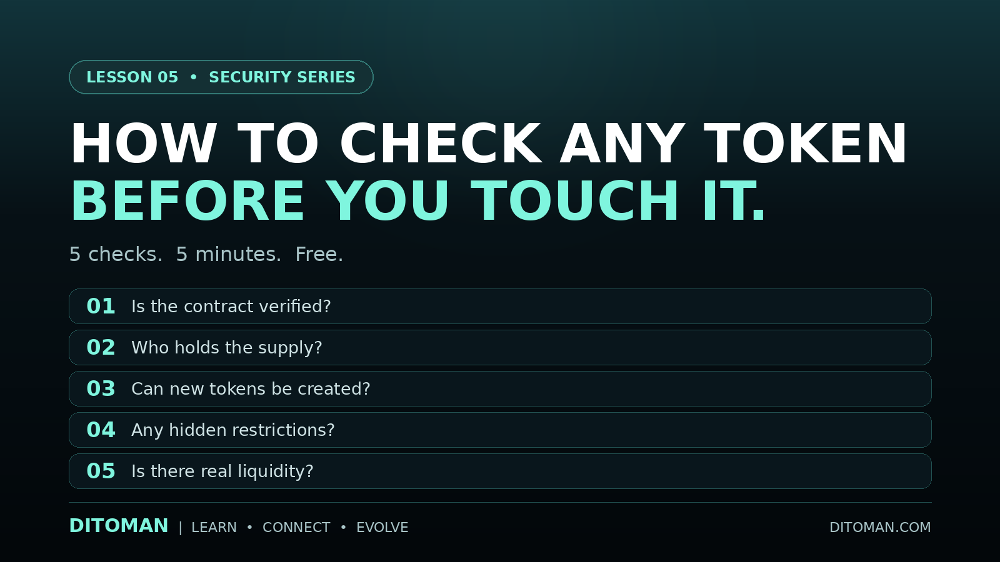

How to Check Any Token Before You Touch It
Five checks. Five minutes. No cost. Most people who lose money in crypto never ran them.
Lesson Content
Read the lesson in English or Persian. This structure is designed for future quiz, score, reputation, and reward systems.
Most people who lose money on a token did not pick the wrong project. They never checked the right things.
Every check below is free, public, and takes about a minute. You do not need technical knowledge. You only need to know where to look.
01. Is the contract verified?
Open the token on a block explorer such as BscScan and go to the Contract tab. If the source code is verified, you will see readable code and a confirmation mark. If it is not verified, you only see machine code, which means nobody outside the team can read what the token actually does.
Unverified does not automatically mean dishonest. But it means you are trusting a promise instead of reading the rules yourself.
02. Who holds the supply?
Open the Holders tab. Look at how much of the total supply the top wallets control.
If a small number of wallets hold nearly everything, then a single decision by a single person can move the entire market. Concentration is not proof of bad intent, and many young projects start this way. But it is always a risk, and it is better to know it before you act rather than after.
03. Can new tokens still be created?
In the Read Contract section, look for a function called owner. If it returns a normal wallet address, that person still controls any owner-only functions in the contract, which can include creating new tokens.
If it returns an address made entirely of zeros, ownership has been renounced. Those powers are gone permanently and nobody can bring them back, including the original team.
This matters because a supply that can grow without limit can dilute everyone holding the token.
04. Are there hidden restrictions?
Read the contract code for transfer taxes, pause functions, or the ability to block specific addresses. Some tokens are built so that buying works normally but selling does not.
This is one of the most common traps, and it is visible in the code before you ever spend anything.
05. Is there real liquidity?
A price on a screen is not money. It only becomes money when someone is willing to trade against it.
Check whether a real liquidity pool exists and how deep it is. Without liquidity there is no exit, no matter what number is displayed.
The habit that matters
These five checks will not make you right about which projects succeed. Nothing does that.
What they do is remove the most common and most avoidable ways people lose money: tokens they could not read, supply they could not see, powers they did not know existed, and exits that were never there.
Check first. Decide after.
بیشتر کسانی که روی یک توکن ضرر میکنند، پروژه اشتباهی را انتخاب نکردهاند. آنها هرگز چیزهای درست را بررسی نکردهاند.
همه بررسیهای زیر رایگان، عمومی و حدود یک دقیقهای هستند. به دانش فنی نیاز ندارید. فقط باید بدانید کجا را نگاه کنید.
۰۱. آیا قرارداد تأیید شده است؟
توکن را در یک بلاک اکسپلورر مانند BscScan باز کنید و به بخش Contract بروید. اگر سورس کد تأیید شده باشد، کد قابل خواندن و یک علامت تأیید میبینید. اگر تأیید نشده باشد، فقط کد ماشین دیده میشود، یعنی هیچکس بیرون از تیم نمیتواند بفهمد این توکن واقعاً چه کاری انجام میدهد.
تأیید نشدن لزوماً به معنای نادرستی نیست. اما یعنی شما به جای خواندن قوانین، به یک وعده اعتماد میکنید.
۰۲. چه کسی عرضه را در اختیار دارد؟
بخش Holders را باز کنید و ببینید کیفپولهای اصلی چه مقدار از کل عرضه را کنترل میکنند.
اگر تعداد کمی کیف پول تقریباً همه چیز را در اختیار داشته باشند، یک تصمیم از یک نفر میتواند کل بازار را جابهجا کند. تمرکز عرضه بهخودیخود نشانه نیت بد نیست و بسیاری از پروژههای تازه اینگونه شروع میشوند. اما همیشه یک ریسک است، و بهتر است پیش از اقدام از آن باخبر باشید، نه بعد از آن.
۰۳. آیا هنوز میتوان توکن جدید ساخت؟
در بخش Read Contract دنبال تابعی به نام owner بگردید. اگر یک آدرس معمولی برگرداند، آن شخص هنوز کنترل توابع مخصوص مالک را دارد که میتواند شامل ساخت توکن جدید باشد.
اگر آدرسی که تماماً از صفر تشکیل شده برگرداند، مالکیت سلب شده است. آن اختیارات برای همیشه از بین رفتهاند و هیچکس، حتی تیم اولیه، نمیتواند آنها را بازگرداند.
این موضوع مهم است، چون عرضهای که بدون محدودیت رشد کند، ارزش دارایی همه دارندگان را کاهش میدهد.
۰۴. آیا محدودیت پنهانی وجود دارد؟
کد قرارداد را از نظر مالیات انتقال، تابع توقف، یا امکان مسدود کردن آدرسهای مشخص بررسی کنید. برخی توکنها طوری ساخته شدهاند که خرید بهدرستی کار میکند اما فروش انجام نمیشود.
این یکی از رایجترین تلههاست و پیش از آنکه پولی خرج کنید، در کد قابل مشاهده است.
۰۵. آیا نقدشوندگی واقعی وجود دارد؟
قیمتی که روی صفحه میبینید پول نیست. وقتی پول میشود که کسی حاضر باشد در مقابل آن معامله کند.
بررسی کنید که آیا استخر نقدشوندگی واقعی وجود دارد و چه عمقی دارد. بدون نقدشوندگی، راه خروجی وجود ندارد، هر عددی هم که نمایش داده شود.
عادتی که اهمیت دارد
این پنج بررسی باعث نمیشود در تشخیص پروژههای موفق درست عمل کنید. هیچ چیز چنین تضمینی نمیدهد.
کاری که انجام میدهند این است: رایجترین و قابلپیشگیریترین راههای از دست دادن پول را حذف میکنند. توکنهایی که نمیشد خواند، عرضهای که دیده نمیشد، اختیاراتی که از آنها خبر نداشتید، و راه خروجی که اصلاً وجود نداشت.
اول بررسی کنید. بعد تصمیم بگیرید.
Now Run It On Us
A checklist is only honest if it applies to the people publishing it. Here is TMN measured against the same five checks, including the ones we do not pass.
TMN was deployed in 2022 and was never distributed or promoted, which is why supply remains concentrated and liquidity has not been established. We state this openly rather than leaving it to be discovered, because a project asking people to verify things should be verifiable itself.
همین پنج بررسی را روی TMN انجام دهید. نقاط قوت و نقاط ضعف ما هر دو در این جدول آمده است. عرضه همچنان متمرکز است و نقدشوندگی هنوز شکل نگرفته، و ما این را پنهان نمیکنیم.
Key Concepts
- Contract verification
- Block explorer
- Holder distribution
- Supply concentration
- Ownership renouncement
- Minting
- Transfer tax
- Blacklist function
- Liquidity pool
Learning Objectives
- Know where to find a token's contract and read its status.
- Understand why supply concentration is a risk.
- Check whether new tokens can still be created.
- Recognise hidden restrictions written into a contract.
- Understand why liquidity determines whether an exit exists.
Future Quiz Bank
These questions are prepared for the future Ditoman quiz and participation system. They may later support learning scores, reputation layers, and possible TMN reward eligibility.
Question 1
What does an unverified contract mean?
A. The token is definitely a scam
B. The source code cannot be read or checked by the public
C. The token cannot be traded
D. The token has no supply limit
Correct answer: B
Question 2
If the owner function returns an address of all zeros, what does that mean?
A. The contract is broken
B. The token has been deleted
C. Ownership has been renounced and owner-only functions can no longer be used
D. Anyone can now create new tokens
Correct answer: C
Question 3
Which of these can be discovered by reading a token's contract?
A. Transfer taxes
B. Blacklist or address-blocking functions
C. Whether new tokens can be created
D. The future price of the token
Correct answers: A, B, C
Question 4
True or False: A price shown on a tracking website proves you can sell the token.
Correct answer: False. Without liquidity there is no exit.
Question 5
Why does supply concentration matter?
A. It always means the project is dishonest
B. A small number of holders can move the entire market with one decision
C. It makes the contract unverifiable
D. It prevents the token from being listed anywhere
Correct answer: B
Instagram Summary
This lesson was first introduced on Ditoman Instagram as part of the Education Series. The Instagram version gives a short visual summary, while this page provides the full learning version.
خلاصه تصویری این درس ابتدا در اینستاگرام Ditoman منتشر شد. نسخه اینستاگرام یک معرفی کوتاه و تصویری است، اما این صفحه نسخه کامل آموزشی آن است.